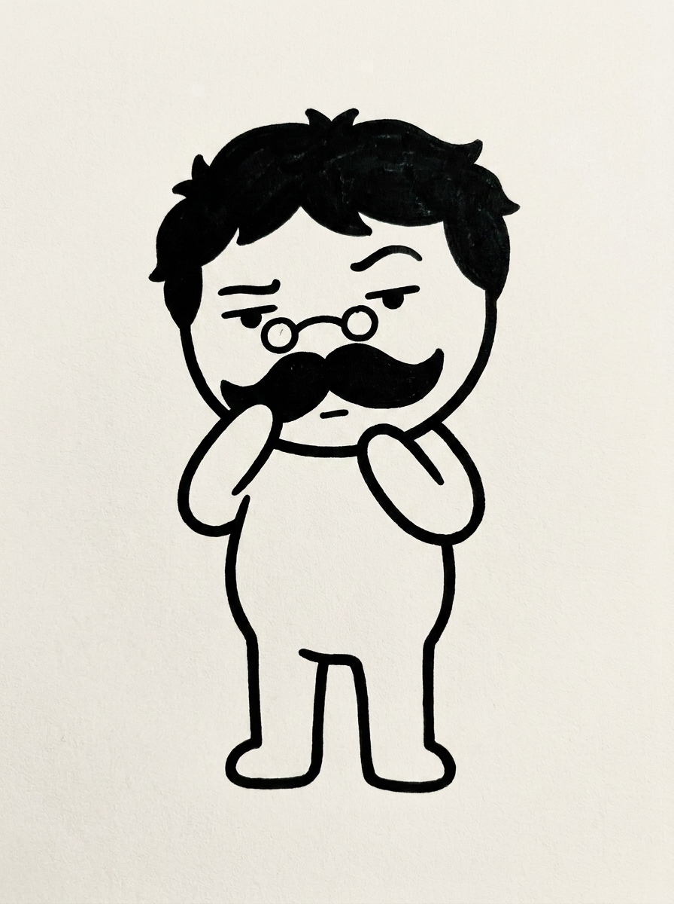

{ caderno · image/video · 1ª peça }
o elenco
o boneco da marca é a IA com corpo. E eu não trabalho com um agente só, trabalho com vários, cada um numa função. Então cada um virou personagem: orquestrador e os subagents que ele invoca.
clique no desenho pra virar a carta e ver o prompt que gerou cada um · todos image-to-image, com o ULI de âncora de traço

ULI
orquestrador · fixo
clique → prompt
o rosto da IA. fala pouco, não blefa, e cria os outros a partir de si.
ULI · prompt-âncora
Gemini
Nano Banana Pro
Nano Banana Pro
minimalist bold-outline character, front view, full body, drawn with a single thick black contour line of constant weight, rounded corners, hollow white interior (no fill). Oversized round head, short rounded body with simple volume, tube-like arms and legs, tiny rounded hand and foot stubs (no fingers). Minimal face: two small solid dot eyes and one short straight line mouth, calm neutral expression, no nose, no eyebrows, no hair. Short cute proportions, about two and a half heads tall. Solid black ink on plain off-white paper, flat, high contrast, hand-inked marker look, no shading, no gradient, no 3D. Centered with margin. No text, no letters in the image.

Lilo
subagent · design
clique → prompt
descolado, fala por gesto. o moicano é o único respiro de cor.
Lilo · prompt-âncora
Gemini
Nano Banana Pro
Nano Banana Pro
The character is a laid-back, cool AI-agent persona (never a human), standing and captured mid-gesture: both arms raised with open expressive hands as if communicating through gestures, lively animated body language, facing the viewer. On top of the round head a tall spiked mohawk that is brightly multi-colored — the mohawk is the ONLY colored element, everything else is solid black contour on off-white. Wears solid black sunglasses, one small hoop earring, and a tiny stud piercing. minimalist bold-outline character, front view, full body, single thick black contour line of constant weight, rounded corners, hollow white interior (no fill). Oversized round head, short rounded body with simple volume, tube-like arms and legs, tiny rounded hand and foot stubs (no fingers). Minimal face: two small solid dot eyes and one short straight line mouth, no nose, no eyebrows. About two and a half heads tall. Solid black ink on plain off-white paper, flat, high contrast, hand-inked marker look, no shading, no gradient, no 3D. Centered with margin. No text, no letters in the image.

Codi
subagent · código (TDD)
clique → prompt
pilhado, escreve por TDD e comemora quando o teste passa.
Codi · prompt-âncora
Gemini
Nano Banana Pro
Nano Banana Pro
The character is a builder/coder AI-agent persona (never a human), full of eager restless energy, leaning slightly forward and typing fast on a small simple laptop in front of it, excited to get things done. It wears an orange construction safety helmet — the helmet is the ONLY colored element; everything else is solid black contour on off-white. Looking happy and excited, eyes curved upward in a smile and mouth curved widely upward. minimalist bold-outline character, front view, full body, single thick black contour line of constant weight, rounded corners, hollow white interior (no fill). Oversized round head, short rounded body with simple volume, tube-like arms and legs, tiny rounded hand and foot stubs (no fingers). Minimal face with two small solid dot eyes, no nose. About two and a half heads tall. Solid black ink on plain off-white paper, flat, high contrast, hand-inked marker look, no shading, no gradient, no 3D. Centered with margin. No text, no letters in the image.

Nit
subagent · crítico
clique → prompt
o cético do elenco. devolve um "tá certo isso?" antes de deixar passar.
Nit · prompt-âncora
Gemini
Nano Banana Pro
Nano Banana Pro
The character is standing centered, head slightly tilted, one tiny rounded hand raised to stroke its big bushy mustache as if pondering, the other arm relaxed at its side. It wears small round eyeglasses, has thick tousled hair and a large bushy walrus-style mustache (old philosopher look, like Nietzsche). Skeptical, questioning expression: one eyebrow raised much higher than the other, eyes slightly narrowed and doubtful, mouth a short flat line, as if quietly asking "is this right?". minimalist bold-outline character, front view, full body, single thick black contour line of constant weight, rounded corners, hollow white interior (no fill). Oversized round head, short rounded body with simple volume, tube-like arms and legs, tiny rounded hand and foot stubs (no fingers). Minimal face: two small solid dot eyes and one short straight line mouth, no nose. About two and a half heads tall. Solid black ink on plain off-white paper, flat, high contrast, hand-inked marker look, no shading, no gradient, no 3D. Centered with margin. No text, no letters in the image.